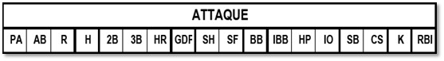

| PA | Nombre de passage au bâton. |
| AB | Nombre de ‘At Bat’. |
| H | Nombre total de Hits. ATTENTION: On compte tous les hits (Simple, double, triple ou Homerun). |
| 2B | Nombre de doubles hits. |
| 3B | Nombre de triples hits. |
| HR | Nombre de home run. |
| GDP | Nombre de frappes au sol ayant générées un double retrait. |
| SH | Nombre de sacrifice Hits. |
| SF | Nombre de sacrifice flies. |
| BB | Nombre total de buts sur balles (y compris les buts intentionnels). |
| IBB | Nombre de buts sur balle intentionnel. |
| HP | Nombre de ‘Hit By pitch’. |
| IO | Nombre de fois où le frappeur a atteint la première base suite à une interférence ou obstruction. |
| SB | Nombre de bases volées. |
| CS | Nombre de fois ou coureur s’est fait retirer sur une tentative de vol de base. |
| K | Nombre de ‘Skrike Out’. |
| RBI | Nombre de ‘RBI’. |
NOTE GENERALE: les performances ci-dessus sont notées sur la ligne correspondante au joueur concerné. Par exemple, si un joueur à joué sur deux positions défensives et qu’il est remplacé par un autre joueur au bâton, les statistiques d’attaque du nouveau joueur seront notées sur la troisième ligne, en face du nom de ce nouveau joueur.